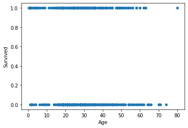
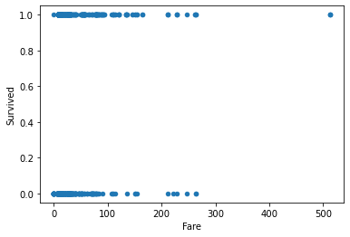

Sect 25-Pt 2: Intro to Logistic Regression#
online-ds-pt-041320
09/02/20
Topics in Sect 25#
Last Class:
Supervised vs Unsupervised Learning
Logistic Regression - Theory
Applying Logistic Regression with
statsmodelsEvaluating Classifiers
Accuracy, Precision, Recall, F1-Score
Confusion Matrices
Today:
Applying Logistic Regression with scikit-learn
Evaluating Classifiers:
ROC-AUC curve
Class Imbalance Problems
Questions?#
From Last Class/Gdoc#
I’m confused about ROC and AUC.
how are the false positive or false negative percents a parameter for ROC?
How do you graph one vs the other when they are fixed values?
I don’t think I’m understanding what’s going on under the hood with this function…
Pseudo R-squared from Statsmodels Logit summary
Logistic Regression in Scikit Learn Lab:
Why didnt they do the get dummies?
logreg = LogisticRegression(fit_intercept = False, C = 1e12, solver = 'liblinear')
- why is the fit_intercept False, and why do we assign large value to C?
Answers#
Pseudo R-Squared: Stack Overflow Discussion:#
“Those unfamiliar with 𝜌2 should be forewarned that its values tend to be considerably lower than those of the 𝑅2 index…For example, values of 0.2 to 0.4 for 𝜌2 represent EXCELLENT fit.”
So basically, 𝜌2 can be interpreted like 𝑅2, but don’t expect it to be as big. And values from 0.2-0.4 indicate (in McFadden’s words) excellent model fit.”
Scikit Learn Logistic Regression parameters:#
From the docstring for LogsisticRegression,C:
Inverse of regularization strength; must be a positive float.
Like in support vector machines, smaller values specify strong```
- Scikit-Learn Logistic Regression User Guide:
- https://scikit-learn.org/stable/modules/linear_model.html#logistic-regression
Previously on…#
Implementing Logistic Regression#
Predict Passenger Survival on Titanic#
# !pip install fsds
from fsds.imports import *
fsds v0.2.30 loaded. Read the docs: https://fs-ds.readthedocs.io/en/latest/
| Handle | Package | Description |
|---|---|---|
| dp | IPython.display | Display modules with helpful display and clearing commands. |
| fs | fsds | Custom data science bootcamp student package |
| mpl | matplotlib | Matplotlib's base OOP module with formatting artists |
| plt | matplotlib.pyplot | Matplotlib's matlab-like plotting module |
| np | numpy | scientific computing with Python |
| pd | pandas | High performance data structures and tools |
| sns | seaborn | High-level data visualization library based on matplotlib |
[i] Pandas .iplot() method activated.
df = fs.datasets.load_titanic(read_csv_kwds={'index_col':0})
relevant_columns = ['Pclass', 'Age', 'SibSp', 'Fare', 'Sex', 'Embarked', 'Survived']
df = df[relevant_columns]
df.head()
| Pclass | Age | SibSp | Fare | Sex | Embarked | Survived | |
|---|---|---|---|---|---|---|---|
| 0 | 3 | 22.0 | 1 | 7.2500 | male | S | 0 |
| 1 | 1 | 38.0 | 1 | 71.2833 | female | C | 1 |
| 2 | 3 | 26.0 | 0 | 7.9250 | female | S | 1 |
| 3 | 1 | 35.0 | 1 | 53.1000 | female | S | 1 |
| 4 | 3 | 35.0 | 0 | 8.0500 | male | S | 0 |
df.info()
<class 'pandas.core.frame.DataFrame'>
Int64Index: 891 entries, 0 to 890
Data columns (total 7 columns):
# Column Non-Null Count Dtype
--- ------ -------------- -----
0 Pclass 891 non-null object
1 Age 714 non-null float64
2 SibSp 891 non-null int64
3 Fare 891 non-null float64
4 Sex 891 non-null object
5 Embarked 889 non-null object
6 Survived 891 non-null int64
dtypes: float64(2), int64(2), object(3)
memory usage: 55.7+ KB
# Recast Number Cols
df['Pclass'] = pd.to_numeric(df['Pclass'],errors='coerce')
df['Survived'].value_counts(normalize=True,dropna=False)
0 0.616162
1 0.383838
Name: Survived, dtype: float64
df.plot('Age','Survived',kind='scatter');

df.plot('Fare','Survived',kind='scatter');

Q: What are the preprocessing steps I need to perform before I create the model?#
Train-test-split
Address null values
Encode categorical data
Train Model with train data
Evaluate Model with test data
Preprocessing#
## Null Values
df.isna().sum() / len(df)
Pclass 0.054994
Age 0.198653
SibSp 0.000000
Fare 0.000000
Sex 0.000000
Embarked 0.002245
Survived 0.000000
dtype: float64
## Separate X and y
target = 'Survived'
X = df.drop(columns=target)
y = df[target]
y
0 0
1 1
2 1
3 1
4 0
..
886 0
887 1
888 0
889 1
890 0
Name: Survived, Length: 891, dtype: int64
## String columns
cat_cols = df.drop(columns=target).select_dtypes('O').columns
cat_cols
Index(['Sex', 'Embarked'], dtype='object')
## Number cols
num_cols = df.drop(columns=target).select_dtypes('number').columns
num_cols
Index(['Pclass', 'Age', 'SibSp', 'Fare'], dtype='object')
## Train Test Split
from sklearn.model_selection import train_test_split
X_train, X_test, y_train, y_test = train_test_split(X, y,random_state=221)
print(X_train.shape, y_test.shape)
pd.Series(y_train).value_counts(1)
(668, 6) (223,)
0 0.642216
1 0.357784
Name: Survived, dtype: float64
X_train.isna().sum()
Pclass 29
Age 136
SibSp 0
Fare 0
Sex 0
Embarked 0
dtype: int64
## Saving null value indices
train_nulls = X_train.isna().any(axis=1)
test_nulls = X_test.isna().any(axis=1)
## Dropping Nulls for time
X_train = X_train.loc[~train_nulls]
y_train = y_train.loc[~train_nulls]
X_test = X_test.loc[~test_nulls]
y_test = y_test.loc[~test_nulls]
# X_train.isna().sum()
X_train.isna().sum(), X_test.isna().sum()
(Pclass 0
Age 0
SibSp 0
Fare 0
Sex 0
Embarked 0
dtype: int64,
Pclass 0
Age 0
SibSp 0
Fare 0
Sex 0
Embarked 0
dtype: int64)
## REMOVED FROM WORKFLOW
# from sklearn.impute import SimpleImputer
# imputer_num = SimpleImputer(strategy='median')
# X_train[num_cols] = imputer_num.fit_transform(X_train[num_cols])
# X_test[num_cols] = imputer_num.transform(X_test[num_cols])
# X_train[cat_cols] = imputer_cat.fit_transform(X_train[cat_cols])
# X_test[cat_cols] = imputer_cat.transform(X_test[cat_cols])
from sklearn.preprocessing import OneHotEncoder
encoder = OneHotEncoder(sparse=False,drop='first')#,handle_unknown='ignore')
## Copy the numerical columns to new ohe X_train, X_test
X_train_ohe = X_train.drop(columns=cat_cols).copy()
X_test_ohe = X_test.drop(columns=cat_cols).copy()
## Fit the encoder
encoder.fit(X_train[cat_cols])
ohe_cols = encoder.get_feature_names(cat_cols)
## Transform X_train and X_test
X_train_ohe[ohe_cols] = encoder.transform(X_train[cat_cols])
X_test_ohe[ohe_cols] = encoder.transform(X_test[cat_cols])
X_train_ohe
---------------------------------------------------------------------------
KeyError Traceback (most recent call last)
<ipython-input-18-ce672da2a8f6> in <module>
13
14 ## Transform X_train and X_test
---> 15 X_train_ohe[ohe_cols] = encoder.transform(X_train[cat_cols])
16 X_test_ohe[ohe_cols] = encoder.transform(X_test[cat_cols])
17
/opt/anaconda3/envs/learn-env/lib/python3.6/site-packages/pandas/core/frame.py in __setitem__(self, key, value)
2933 self._setitem_frame(key, value)
2934 elif isinstance(key, (Series, np.ndarray, list, Index)):
-> 2935 self._setitem_array(key, value)
2936 else:
2937 # set column
/opt/anaconda3/envs/learn-env/lib/python3.6/site-packages/pandas/core/frame.py in _setitem_array(self, key, value)
2964 else:
2965 indexer = self.loc._get_listlike_indexer(
-> 2966 key, axis=1, raise_missing=False
2967 )[1]
2968 self._check_setitem_copy()
/opt/anaconda3/envs/learn-env/lib/python3.6/site-packages/pandas/core/indexing.py in _get_listlike_indexer(self, key, axis, raise_missing)
1551
1552 self._validate_read_indexer(
-> 1553 keyarr, indexer, o._get_axis_number(axis), raise_missing=raise_missing
1554 )
1555 return keyarr, indexer
/opt/anaconda3/envs/learn-env/lib/python3.6/site-packages/pandas/core/indexing.py in _validate_read_indexer(self, key, indexer, axis, raise_missing)
1638 if missing == len(indexer):
1639 axis_name = self.obj._get_axis_name(axis)
-> 1640 raise KeyError(f"None of [{key}] are in the [{axis_name}]")
1641
1642 # We (temporarily) allow for some missing keys with .loc, except in
KeyError: "None of [Index(['Sex_male', 'Embarked_Q', 'Embarked_S'], dtype='object')] are in the [columns]"
## Scale data
from sklearn.preprocessing import MinMaxScaler, StandardScaler
scaler= StandardScaler()
X_train_sca = X_train_ohe.copy()
X_test_sca = X_test_ohe.copy()
X_train_sca[num_cols] = scaler.fit_transform(X_train_sca[num_cols])
X_test_sca[num_cols] = scaler.transform(X_test_sca[num_cols])
X_train_sca
## Verify scaling
X_train_ohe.describe().round(2)
X_train_sca.describe().round(2)
Fitting a Logistic Regression with statsmodels#
import statsmodels.api as sm
y_train.value_counts()
X_train_sms = sm.add_constant(X_train_sca)
X_test_sms = sm.add_constant(X_test_sca)
X_train_sms
logit = sm.Logit(y_train,X_train_sms).fit()
logit.summary()
from sklearn import metrics
y_hat_train = logit.predict(X_train_sms).round()
y_hat_test = logit.predict(X_test_sms).round()
display(y_hat_train.head(),y_train.head())
def remake_df(array,df):
"""Returns the array as a df with the same columns and index as df"""
return pd.DataFrame(array, columns=df.columns, index=df.index)
def plot_confusion_matrix(y_test,y_hat_test, normalize='true',
classes=['Died','Survived'],cmap='Blues',
style='seaborn-notebook'):
"""Plots Confusion Matrix from sklearn."""
cm = metrics.confusion_matrix(y_test,y_hat_test.round(),
normalize=normalize)
with plt.style.context(style):
ax = sns.heatmap(cm,annot=True,square=True, center=0,cmap=cmap,
xticklabels=classes,yticklabels=classes)
if normalize==False:
title = "Raw Confusion Matrix"
else:
title = f"Normalized Confusion Matrix\n(by {normalize} classes)"
ax.set(ylabel='True Classes',xlabel='Predicted Classes',title=title)
fig = ax.get_figure()
return fig,ax
def evaluate_statsmodel(y_test,y_hat_test,classes=['Died','Survived'],
normalize='true',cmap='Blues'):
"""Evaluates Classification models by displaying:
- Classification Report
- Normalized Confusion Matrix"""
dashes = '---'*20
print(dashes)
print("[i] CLASSIFICATION REPORT")
print(dashes)
print(metrics.classification_report(y_test,y_hat_test.round(),
target_names=classes))
print(dashes)
fig,ax = plot_confusion_matrix(y_test,y_hat_test)
def get_model_coeffs(X_df,model, statsmodels=True):
if statsmodels == False:
coeffs_df = pd.DataFrame({'Coefficients':model.coef_[0]},index=X_df.columns)
coeffs_df.loc['const'] = model.intercept_
coeffs_df
else:
coeffs_df = pd.DataFrame({
'Coefficents':model.params,
'p-values':model.pvalues.round(4)
})
return coeffs_df
## Putting it all Together
logit = sm.Logit(y_train,X_train_sms).fit()
display(logit.summary())
y_hat_train = logit.predict(X_train_sms).round()
y_hat_test = logit.predict(X_test_sms).round()
evaluate_statsmodel(y_test,y_hat_test)
## Putting it all Together
logit = sm.Logit(y_train,X_train_sms).fit()
display(logit.summary())
y_hat_train = logit.predict(X_train_sms).round()
y_hat_test = logit.predict(X_test_sms).round()
evaluate_statsmodel(y_test,y_hat_test)
# get_model_coeffs(X_train_sms,logit)
Part 2 - Logistic Regression with sklearn#
Fitting a Logistic Regression with sklearn#
REMINDER: Our current variables:
X_train_sca
X_test_sca
y_train
y_test
Our current functions are:
plot_confusion_matrixremake_dfevaluate_statsmodels
from sklearn.linear_model import LogisticRegression
## Fit a logistic regression model with defaults
log_reg = LogisticRegression()
log_reg.fit(X_train_sca, y_train)
## Get Predictions for training and test data
y_hat_train = log_reg.predict(X_train_sca)
y_hat_test = log_reg.predict(X_test_sca)
## Use our evaluation function
evaluate_statsmodel(y_test,y_hat_test)#,normalize=False)
log_reg.coef_[0]
## Get the coefficents from the model and make into a series
coeffs = pd.Series(log_reg.coef_[0], index=X_train_sca.columns)
coeffs.loc['intercept'] = log_reg.intercept_[0]
coeffs
A note on hyperparameters:#
There are several parameters we control for our model.
e.g.:
Csolverfit_intercept
We ideally should not blindly trust the model’s defaults, but should learn more about them. - https://scikit-learn.org/stable/modules/generated/sklearn.linear_model.LogisticRegression.html
We will explore this more shortly…#
## Fit a logistic regression model with C=1e5, solver='liblinear'
log_reg = LogisticRegression(C=1e5, solver='liblinear')
log_reg.fit(X_train_sca, y_train)
y_hat_train = log_reg.predict(X_train_sca)
y_hat_test = log_reg.predict(X_test_sca)
evaluate_statsmodel(y_test,y_hat_test)
ROC Curve - Receiver Operating Characteristic Curve#
Evaluating Our Model#
Graph Interpretation#
False Positive Rate vs True Positive Rate → for each threshold

Imagine we have a logistic regression (classifier):
Turn a continuous feature to binary prediction
What Distributions Would Work Well in Classifying?#

Defining the Threshold#

# Interactive ROC curve
from IPython.display import IFrame
IFrame('http://www.navan.name/roc/', width=900, height=600)
import sklearn.metrics
# Scikit-learn's built in roc_curve method returns the fpr, tpr, and thresholds
# for various decision boundaries given the case member probabilites
## Get y_score or y_score_prob from the log_reg decision function / predict proba
y_score = log_reg.decision_function(X_test_sca)
y_score_prob = log_reg.predict_proba(X_test_sca)
fpr,tpr,thresh = metrics.roc_curve(y_test,y_score)
metrics.auc(fpr, tpr)
y_score.shape, y_score_prob.shape
fpr,tpr,thresh = metrics.roc_curve(y_test,y_score_prob[:,1])
metrics.auc(fpr, tpr)
# X_train_sca.shape
thresh
# y_score
## Plot The ROC Curve
fig, axes = plt.subplots(nrows=2,figsize=(8,7))
ax =axes[0]
## PLot fpt vs tpr
ax.plot(fpr,tpr, label=f'ROC CURVE AUC={round(metrics.auc(fpr, tpr),2)}')
## Plot a diagnonal line to indicate worthless model
ax.plot([0,1],[0,1],ls=':',)
## Properly Label axes and title figure
ax.set(xlabel='False Positive Rate',ylabel='True Positie Rate')
## Add legend and grid
ax.legend()
ax.grid()
ax =axes[1]
[ax.axvline(t) for t in thresh];
ax.set_xlim(0,1)
curve = metrics.plot_roc_curve(log_reg,X_test_sca,y_test)
ax = curve.ax_
ax.legend()
ax.plot([0,1],[0,1],ls=':')
ax.grid()
But now there’s a sklearn tool for that!#
metrics.plot_roc_curve(log_reg,X_test_sca,y_test)
## Update the sklearn plot to include the diagonal line and grid
Activity: Make an evaluate_classification function#
Write a function called
evaluate_classificationIt should accept (at minimum):
model (sklearn model)
X_test
y_test
Ideally you should also accept X_train and y_train to compare results to check for overfitting. ?
It should produce:
Classification metrics printed
Confusion Matrix displayed
roc_auc curve displayed
Then revisit some of the questions we had from last class re: scaling, LogisticRegression parameters
import sklearn.metrics as metrics
def evaluate_classification(model,X_test,y_test,classes=None,
normalize='true',cmap="Blues",figsize=(10,5)):
## Get Predictions
y_hat_test = model.predict(X_test)
## Classification Report / Scores
dashes = '---'*20
print(dashes)
print("[i] CLASSIFICATION REPORT")
print(dashes)
print(metrics.classification_report(y_test,y_hat_test,
target_names=classes))
print(dashes)
fig, axes = plt.subplots(ncols=2, figsize=figsize)
metrics.plot_confusion_matrix(model, X_test,y_test,normalize=normalize,
cmap=cmap,ax=axes[0])
## MAKE FIGURE
metrics.plot_roc_curve(model,X_test,y_test,ax=axes[1])
ax = axes[1]
ax.legend()
ax.plot([0,1],[0,1],ls=':')
ax.grid()
## Plot Confusion Matrix
## Plot ROC Curve
pass
## Fit and evaluate a logistic regression
params = dict(C=1e5, solver='liblinear')
log_reg = LogisticRegression(**params)
log_reg.fit(X_train_sca, y_train)
evaluate_classification(log_reg,X_test_sca,y_test,
classes=['Died','Survived'])#,label=str(params));
Hyperparameter Tuning: GridSearchCV#
solver Parameter#
https://scikit-learn.org/stable/modules/linear_model.html#logistic-regression
The solvers implemented in the class LogisticRegression are “liblinear”, “newton-cg”, “lbfgs”, “sag” and “saga”:
The solver “liblinear” uses a coordinate descent (CD) algorithm, and relies on the excellent C++ LIBLINEAR library, which is shipped with scikit-learn. However, the CD algorithm implemented in liblinear cannot learn a true multinomial (multiclass) model; instead, the optimization problem is decomposed in a “one-vs-rest” fashion so separate binary classifiers are trained for all classes. This happens under the hood, so LogisticRegression instances using this solver behave as multiclass classifiers.
1000,10**3, 1e3
import warnings
warnings.filterwarnings('ignore')
from sklearn.model_selection import GridSearchCV, RandomizedSearchCV
model = LogisticRegression()
params= {'C':[0.001, 0.01, 0.1, 1, 10, 100]}
gridsearch = GridSearchCV(model, params,scoring='roc_auc')
gridsearch
gridsearch.fit(X_train_sca, y_train)
best_params = gridsearch.best_params_
best_params
gridsearch.best_estimator_
best_model = LogisticRegression(**best_params)
best_model.fit(X_train_sca, y_train)
evaluate_classification(best_model,X_test_sca,y_test)
res_df = pd.DataFrame(gridsearch.cv_results_)
res_df
res_df.plot('param_C','mean_test_score',logx=True)
from sklearn.model_selection import GridSearchCV, RandomizedSearchCV
model = LogisticRegression()
params = {'C' : [0.01,0.1,1.0,10,100,1e5],
'penalty' : ['l1', 'l2', 'elasticnet', 'none'],
'solver':["liblinear", "newton-cg", "lbfgs", "sag","saga"],
'fit_intercept':[True,False],
'class_weight':[None,'balanced']
}
gridsearch = GridSearchCV(model,params,scoring='roc_auc',return_train_score=True)
gridsearch.fit(X_train_sca,y_train)
print('BEST RESULTS:')
print(gridsearch.best_score_)
gridsearch.best_params_
best_params = gridsearch.best_params_
best_params
best_model = LogisticRegression(**best_params)
best_model.fit(X_train_sca,y_train)
evaluate_classification(best_model,X_test_sca,y_test)
grid_results = pd.DataFrame(gridsearch.cv_results_)
grid_results.sort_values('mean_train_score')
Class Imbalance#
Class Imbalance Problems Lab#
# !pip install -U imblearn
df = pd.read_csv('creditcard.csv.gz')
df
target = 'Class'
y = df[target].copy()
X = df.drop(columns=target).copy()
X_train, X_test, y_train, y_test = train_test_split(X, y, random_state=0)
y_train.value_counts(1)
When metrics can be misleading…#
i.e. accuracy
# from sklearn
regr = LogisticRegression(fit_intercept=False, solver='liblinear')
regr.fit(X_train, y_train)
regr.score(X_test,y_test)
evaluate_classification(regr,X_test, y_test)#,label='Imbalanced');
y_test.value_counts(normalize=True)
Woohoo! We must have an amazing model!!…#
DummyClassifier for Dummies#
from sklearn.dummy import DummyClassifier
## Let's guess 0 for every observation
dummy = DummyClassifier(strategy='constant',constant=0)
preds = dummy.fit(X_train,y_train).predict(X_test)
## How did we do?
dummy.score(X_test,y_test)
evaluate_classification(dummy,X_test, y_test)#,label='Dummy');
So what can we do?
The Possible Solutions#
Using
class_weightparameterOversampling the minority class
Undersampling the majority class
## Baseline Model using lesson paras
params = dict(fit_intercept=False, solver='liblinear')
regr = LogisticRegression(**params)
regr.fit(X_train, y_train)
evaluate_classification(regr,X_test,y_test)#,label="BASELINE" )
print(params)#str(params))
Solution 1: class_weight="balanced"#
regr = LogisticRegression(class_weight='balanced',**params)
regr.fit(X_train, y_train)
evaluate_classification(regr,X_test,y_test)#,label='balanced')
Solution 2: Oversampling minority class with SMOTE#
y_train.value_counts(0)
from imblearn.over_sampling import SMOTE
smote = SMOTE()
X_train_smote, y_train_smote = smote.fit_sample(X_train,y_train)
pd.Series(y_train_smote).value_counts()
regr = LogisticRegression(**params)#class_weight='balanced',C=1e5, solver='liblinear')
regr.fit(X_train_smote, y_train_smote)
evaluate_classification(regr,X_test,y_test)#,label='SMOTE')
Solution 3: Undersampling majority class#
df_balance = pd.concat([X_train, y_train],axis=1)
df_balance
n_samples = df_balance['Class'].value_counts().min()
n_samples
df_balance.groupby('Class').groups
df_resample = pd.DataFrame()
for grp,idx in df_balance.groupby('Class').groups.items():
resample = df_balance.loc[idx].sample(n=n_samples,random_state=123)
df_resample = pd.concat([df_resample,resample],axis=0)
display(df_resample.head(), df_resample["Class"].value_counts())
X_train_under = df_resample.drop('Class',axis=1).copy()
y_train_under = df_resample['Class'].copy()
regr = LogisticRegression(**params)#C=1e5, solver='liblinear')
regr.fit(X_train_under, y_train_under)
evaluate_classification(regr,X_test,y_test)
Sect 26: Topics to Discuss#
Recommendation: do not get too stressed out about that this module. Its a lot of revisiting concepts that we’ve discussed before.
Don’t stress about the labs, look at the solutions and digest what they are doing.
-
“log-likelihood”
“Maximum Likelihood Estimation”
APPENDIX#
## Trying out class balances with different seeds
# seed_results = []
# for seed in range(321):
# X_train, X_test, y_train, y_test = train_test_split(X, y,random_state=seed)
# percent_class_1 = y_train.value_counts(1).loc[1]
# seed_results.append({'seed':seed, 'value_counts':percent_class_1})
# pd.DataFrame.from_records(seed_results).sort_values('value_counts').head()
Faster GridSearches with Tune Sklearn#
# # !pip install scikit-optimize
# !pip install tune-sklearn
# !pip install tune-sklearn ray[tune]
# from tune_sklearn import TuneGridSearchCV
# model = LogisticRegression()
# params = {'C' : [0.01,0.1,1.0,10,100,1e5],
# 'penalty' : ['l1', 'l2', 'elasticnet', 'none'],
# 'solver':["liblinear", "newton-cg", "lbfgs", "sag","saga"],
# 'fit_intercept':[True,False],
# 'class_weight':[None,'balanced']
# }
# gridsearch = TuneGridSearchCV(model,params,scoring='roc_auc',return_train_score=True)
# gridsearch.fit(X_train_sca,y_train)
# print('BEST RESULTS:')
# print(gridsearch.best_score_)
# gridsearch.best_params_
Old School ROC CURVE#
def plot_roc_curve(y_test,y_score):
# y_score = regr.decision_function(X_test)
fpr,tpr,thresh = metrics.roc_curve(y_test,y_score)
AUC = round(metrics.auc(fpr,tpr),3)
print(f"ROC-area-under-the-curve= {AUC}")
fig,ax=plt.subplots()
ax.plot(fpr,tpr,color='darkorange',label=f'ROC Curve AUC: {AUC}')
ax.plot([0,1],[0,1],ls=':')
ax.set(ylabel='True Positive Rate',xlabel='False Positive Rate',
title='Receiver operating characteristic (ROC) Curve')
ax.legend()
ax.grid()
# plot_roc_curve(y_test,y_score)